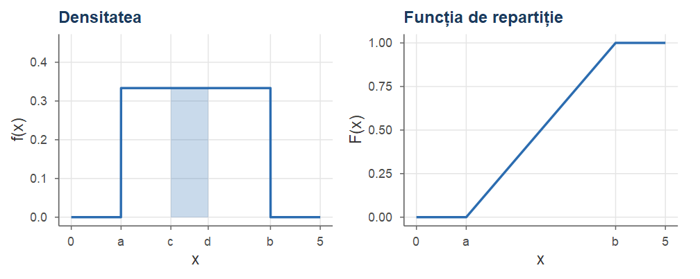
Probabilități și Statistică · Cursul 5
Universitatea din București · Facultatea de Matematică și Informatică · 2026–2027
| Partea | Conținut |
|---|---|
| I | Repartiția uniformă; universalitatea repartiției uniforme; metoda inversei |
| II | Repartiția exponențială; lipsa de memorie; procesul Poisson; de la timp discret la timp continuu |
| III | Repartiția normală: integrala lui Gauss, standardizare, regula 68–95–99.7, sume de variabile independente; repartițiile Gamma și Beta |
| IV | Transformări de variabile aleatoare; asimetrie și aplatizare; exerciții rezolvate |
La sfârșitul cursului, studenții vor putea:
pnorm, qnorm;Alegem un punct „la întâmplare” în \([a,b]\): nicio regiune a intervalului nu este favorizată.
Formal, cerem ca densitatea să fie constantă pe \([a,b]\) și nulă în rest: \(f(x)=c\) pentru \(x\in[a,b]\).
Cum \(f\) este o densitate, \(c\ge0\) și \[ 1=\int_{-\infty}^{+\infty}f(x)\dd x=\int_a^b c\dd x=c\,(b-a),\qquad\text{deci}\qquad c=\frac{1}{b-a}. \]
Fie \(a<b\). O variabilă aleatoare \(U\) este repartizată uniform pe intervalul \([a,b]\), și notăm \(U\sim\Unif(a,b)\) (sau \(U\sim\Unif([a,b])\)), dacă are densitatea \[ f(x)=\begin{cases}\dfrac{1}{b-a}, & a\le x\le b,\\[2mm] 0, & \text{altfel,}\end{cases} \qquad\text{adică}\qquad f(x)=\frac{1}{b-a}\Ind_{[a,b]}(x). \]
Deoarece punctele au probabilitate zero, este indiferent dacă intervalul se consideră închis sau deschis: \(\Unif([a,b])\) și \(\Unif((a,b))\) desemnează aceeași repartiție.
Dacă \(U\sim\Unif(a,b)\), atunci \[ F(x)=\int_{-\infty}^x f(t)\dd t=\begin{cases}0, & x<a,\\[1mm] \dfrac{x-a}{b-a}, & a\le x\le b,\\[2mm] 1, & x>b.\end{cases} \] În plus, pentru orice subinterval \((c,d)\subseteq(a,b)\), \(\PP\big(U\in(c,d)\big)=\int_c^d\frac{1}{b-a}\dd x=\frac{d-c}{b-a}\), adică probabilitatea este proporțională cu lungimea subintervalului (și nu depinde de poziția lui).
Demonstrație. Dacă \(x<a\), densitatea este nulă pe \((-\infty,x]\), deci \(F(x)=0\).
Dacă \(a\le x\le b\), \[ F(x)=\int_{-\infty}^x f(t)\dd t=\int_a^x\frac{1}{b-a}\dd t=\frac{x-a}{b-a}. \] Dacă \(x>b\), \(F(x)=\int_a^b\frac{1}{b-a}\dd t=1\).
A doua afirmație se obține la fel: \(\PP(c<U<d)=\int_c^d\frac{\dd x}{b-a}=\frac{d-c}{b-a}\).■

\(\Unif(1,4)\): aria hașurată este \(\PP(2\le U\le 2.75)=0.75/3=0.25\); \(F\) este liniară pe \([a,b]\).
Pentru \(U\sim\Unif(0,1)\): \(f_U(x)=\Ind_{[0,1]}(x)\) și \(F_U(x)=x\) pe \([0,1]\). Este repartiția produsă de generatoarele de numere aleatoare (runif în R).
Dacă \(U\sim\Unif(0,1)\) și \(a<b\), atunci \(V=a+(b-a)U\sim\Unif(a,b)\). Reciproc, dacă \(V\sim\Unif(a,b)\), atunci \(\dfrac{V-a}{b-a}\sim\Unif(0,1)\).
Orice repartiție uniformă se obține din \(\Unif(0,1)\) printr-o transformare de locație și scală.
Demonstrație. Pentru \(x\in[a,b]\), deoarece \(b-a>0\) și \(\frac{x-a}{b-a}\in[0,1]\), \[ F_V(x)=\PP\big(a+(b-a)U\le x\big)=\PP\Big(U\le\frac{x-a}{b-a}\Big)=F_U\Big(\frac{x-a}{b-a}\Big)=\frac{x-a}{b-a}. \] Pentru \(x<a\) argumentul lui \(F_U\) este negativ, deci \(F_V(x)=0\); pentru \(x>b\) este mai mare decât \(1\), deci \(F_V(x)=1\). Așadar \(V\) are funcția de repartiție din Propoziția 2. Reciproca: analog.■
Transformarea \(u\mapsto a+(b-a)u\): o scalare (înmulțirea cu \(b-a\) „întinde” \([0,1]\) la lungimea \(b-a\)) urmată de o translație (adunarea lui \(a\)). Tipul \(x\mapsto\mu+\sigma x\) îl reîntâlnim la repartiția normală.
Dacă \(V\sim\Unif(a,b)\), atunci \[ \E[V]=\frac{a+b}{2},\qquad \Var(V)=\frac{(b-a)^2}{12}. \]
Demonstrație. Calcul direct. Avem \[ \begin{aligned} \E[V]&=\int_{-\infty}^{+\infty}x\,\frac{1}{b-a}\Ind_{[a,b]}(x)\dd x=\frac{1}{b-a}\cdot\frac{x^2}{2}\Big|_a^b=\frac{b^2-a^2}{2(b-a)}=\frac{a+b}{2},\\ \E[V^2]&=\frac{1}{b-a}\int_a^b x^2\dd x=\frac{b^3-a^3}{3(b-a)}=\frac{a^2+ab+b^2}{3}. \end{aligned} \]■
Demonstrație. Deci \[ \Var(V)=\frac{a^2+ab+b^2}{3}-\frac{(a+b)^2}{4}=\frac{4a^2+4ab+4b^2-3a^2-6ab-3b^2}{12}=\frac{(b-a)^2}{12}. \]
Prin transformare. Pentru \(U\sim\Unif(0,1)\): \(\E[U]=\int_0^1x\dd x=\frac12\), \(\Var(U)=\int_0^1x^2\dd x-\frac14=\frac1{12}\). Cum \(V\) are aceeași repartiție ca \(a+(b-a)U\) (Propoziția 3), \[ \E[V]=a+(b-a)\E[U]=\frac{a+b}{2},\qquad \Var(V)=(b-a)^2\Var(U)=\frac{(b-a)^2}{12}. \]■
Momente de ordin superior: \(\E[U^k]=\frac{1}{k+1}\) și \(\E[V^k]=\dfrac{b^{k+1}-a^{k+1}}{(k+1)(b-a)}\).
Din stație pleacă un autobuz la fiecare \(15\) minute, începând cu ora \(7{:}00\). Un călător ajunge în stație la un moment repartizat uniform între \(7{:}00\) și \(7{:}30\). Care este probabilitatea ca el să aștepte a) mai puțin de \(5\) minute; b) mai mult de \(10\) minute?
Fie \(X\sim\Unif(0,30)\) numărul de minute după ora \(7{:}00\) la care ajunge călătorul.
Așteaptă mai puțin de \(5\) minute dacă ajunge în \((10,15)\) sau în \((25,30)\): \(\PP(10<X<15)+\PP(25<X<30)=\frac{5}{30}+\frac{5}{30}=\frac13 .\)
Așteaptă mai mult de \(10\) minute dacă ajunge în \((0,5)\) sau în \((15,20)\): probabilitatea este tot \(\frac{10}{30}=\frac13\).
Funcțiile R: dunif (densitatea), punif (funcția de repartiție), qunif (cuantila), runif (generare), cu argumentele min \(=a\), max \(=b\). Aceleași prefixe d, p, q, r pentru toate repartițiile.
punif(0.3, min = 0, max = 2) # P(U <= 0.3) pentru U ~ U(0, 2)
#> [1] 0.15
qunif(0.9, min = 0, max = 2) # cuantila de ordin 0.9
#> [1] 1.8
set.seed(1); v <- 1 + 3 * runif(1e5) # V = a + (b - a) U ~ U(1, 4)
c(medie = mean(v), teor = 5/2, var = var(v), teor = 9/12)
#> medie teor var teor
#> 2.499 2.500 0.754 0.750Pornind de la o singură variabilă \(\Unif(0,1)\) putem construi o variabilă cu orice funcție de repartiție dorită; invers, orice variabilă continuă poate fi transformată într-o variabilă uniformă.
Fie \(X\) o variabilă aleatoare a cărei funcție de repartiție \(F\) este continuă și strict crescătoare (deci bijectivă de la suportul lui \(X\) la \((0,1)\)). Atunci:
dacă \(U\sim\Unif(0,1)\), variabila \(F^{-1}(U)\) are aceeași repartiție ca \(X\);
\(F(X)\sim\Unif(0,1)\).
Este principiul pe care se bazează majoritatea algoritmilor de simulare.
Demonstrație.
Aplicând funcția crescătoare \(F\) ambilor membri ai inegalității, evenimentele \(\{F^{-1}(U)\le x\}\) și \(\{U\le F(x)\}\) coincid, deci \[ \PP(Y\le x)=\PP\big(F^{-1}(U)\le x\big)=\PP\big(U\le F(x)\big)=F(x), \] deoarece \(F(x)\in[0,1]\) și \(F_U(u)=u\) pe \([0,1]\).
Astfel \(F^{-1}(U)\) și \(X\) au aceeași funcție de repartiție.■
Demonstrație.
Deci \(Y\) are funcția de repartiție a lui \(\Unif(0,1)\).■
Teorema rămâne valabilă pentru orice funcție de repartiție \(F\) (inclusiv pentru variabile discrete) dacă în locul inversei folosim funcția cuantilă (Cursul 4) \[ F^{-1}(u)=\inf\{x\in\R : F(x)\ge u\},\qquad u\in(0,1). \] Dacă \(F\) este continuă și strict crescătoare, \(F^{-1}\) este chiar inversa lui \(F\).
Partea b) necesită însă continuitatea lui \(F\): pentru o variabilă discretă, \(F(X)\) ia doar un număr cel mult numărabil de valori și nu poate fi uniformă.
Partea a) a teoremei conduce la metoda inversei (metoda transformării inverse). Pentru a genera \(n\) observații dintr-o repartiție cu funcția de repartiție \(F\):
runif(n));Valorile \(x_1,\dots,x_n\) sunt observații din repartiția dorită; histograma lor aproximează densitatea \(f=F'\).
Condiția practică: trebuie să putem calcula (explicit sau numeric) \(F^{-1}\). Pentru normală \(F^{-1}=\Phi^{-1}\) nu are formă explicită, dar se calculează numeric (qnorm).
În Exemplul 3 din Cursul 4: densitatea logistică \(f(x)=\frac{e^x}{(1+e^x)^2}\) are funcția de repartiție \(F(x)=\frac{e^x}{1+e^x}\), \(x\in\R\), continuă și strict crescătoare. Rezolvăm \(F(x)=u\), \(u\in(0,1)\): \[ \frac{e^x}{1+e^x}=u\iff e^x=u+ue^x\iff e^x=\frac{u}{1-u}\iff x=\ln\frac{u}{1-u}. \] Deci \(F^{-1}(u)=\ln\frac{u}{1-u}\), iar dacă \(U\sim\Unif(0,1)\), variabila \(\ln\frac{U}{1-U}\) are repartiție logistică. Pentru \(n\) observații logistice, generăm \(n\) observații uniforme și le aplicăm \(u\mapsto\ln\frac{u}{1-u}\).
set.seed(2026)
u <- runif(10000)
x <- log(u / (1 - u)) # metoda inversei: F^{-1}(U)
# cuantile empirice vs. cuantile teoretice (logistică)
round(rbind(empiric = quantile(x, c(0.1, 0.25, 0.5, 0.75, 0.9)),
teoretic = qlogis(c(0.1, 0.25, 0.5, 0.75, 0.9))), 3)
#> 10% 25% 50% 75% 90%
#> empiric -2.204 -1.097 -0.01 1.078 2.221
#> teoretic -2.197 -1.099 0.00 1.099 2.197Cuantilele empirice ale valorilor simulate sunt foarte apropiate de cuantilele teoretice ale repartiției logistice (qlogis).
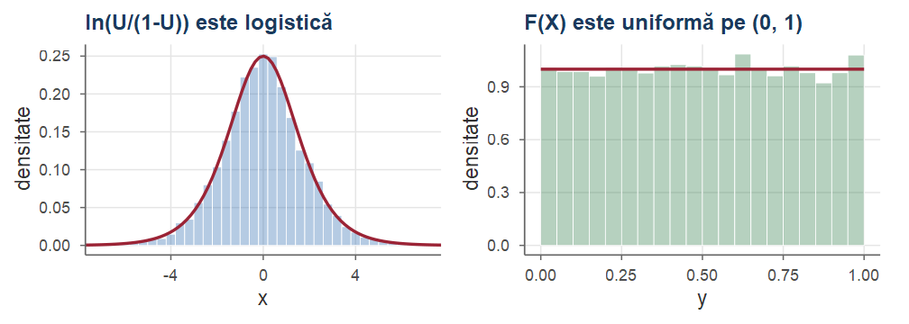
Stânga: a) — \(F^{-1}(U)\) are repartiția \(F\). Dreapta: b) — pentru \(X\) cu densitatea \(e^{-x}\), \(x>0\), valorile \(F(X)=1-e^{-X}\) sunt uniforme.
Fie \(X\sim\Bern(p)\). Funcția de repartiție este \(F(x)=0\) pentru \(x<0\), \(F(x)=1-p\) pentru \(0\le x<1\) și \(F(x)=1\) pentru \(x\ge1\). Funcția cuantilă \(F^{-1}(u)=\inf\{x: F(x)\ge u\}\) este \[ F^{-1}(u)=\begin{cases}0, & 0<u\le 1-p,\\ 1, & 1-p<u<1.\end{cases} \] Așadar \(F^{-1}(U)=1\) exact când \(U>1-p\). Cum și \(1-U\sim\Unif(0,1)\), putem folosi echivalent regula: generăm \(U\sim\Unif(0,1)\); dacă \(U<p\), punem \(X=1\), altfel \(X=0\) — „aruncarea unei monede” cu probabilitatea de succes \(p\).
Dacă \(X\) ia valorile \(x_1<x_2<\dots<x_m\) cu probabilitățile \(p_1,\dots,p_m\), atunci \[ F^{-1}(U)=x_k\iff p_1+\dots+p_{k-1}<U\le p_1+\dots+p_k : \] împărțim \((0,1)\) în subintervale consecutive de lungimi \(p_1,\dots,p_m\) și returnăm \(x_k\) dacă \(U\) cade în al \(k\)-lea subinterval.
O variabilă aleatoare \(X\) are repartiție exponențială de parametru \(\lambda>0\), și notăm \(X\sim\Exp(\lambda)\), dacă densitatea ei este \[ f(x)=\lambda e^{-\lambda x}\,\Ind_{(0,\infty)}(x)=\begin{cases}\lambda e^{-\lambda x}, & x>0,\\ 0, & x\le0.\end{cases} \] Parametrul \(\lambda\) se numește rata (sau intensitatea) repartiției.
\(f\) este o densitate: \(f\ge0\) și \(\int_0^\infty\lambda e^{-\lambda x}\dd x=\big(-e^{-\lambda x}\big)\big|_0^\infty=0-(-1)=1\).
Modelează timpul de așteptare până la producerea unui eveniment: durata de viață a unei componente electronice, timpul până la sosirea următorului client, durata unei convorbiri, timpul până la dezintegrarea unui atom radioactiv.
Dacă \(X\sim\Exp(\lambda)\), atunci \[ F(x)=\begin{cases}0, & x\le0,\\ 1-e^{-\lambda x}, & x>0,\end{cases} \qquad\text{și}\qquad \PP(X>a)=e^{-\lambda a},\quad a\ge0 . \]
Demonstrație. Pentru \(x>0\), \(F(x)=\int_{-\infty}^x\lambda e^{-\lambda t}\Ind_{(0,\infty)}(t)\dd t=\int_0^x\lambda e^{-\lambda t}\dd t=\big(-e^{-\lambda t}\big)\big|_0^x=1-e^{-\lambda x}\), iar pentru \(x\le0\), \(F(x)=0\). Apoi \(\PP(X>a)=1-F(a)=e^{-\lambda a}\).■
\(a\mapsto\PP(X>a)=e^{-\lambda a}\) este probabilitatea de supraviețuire (scade exponențial).
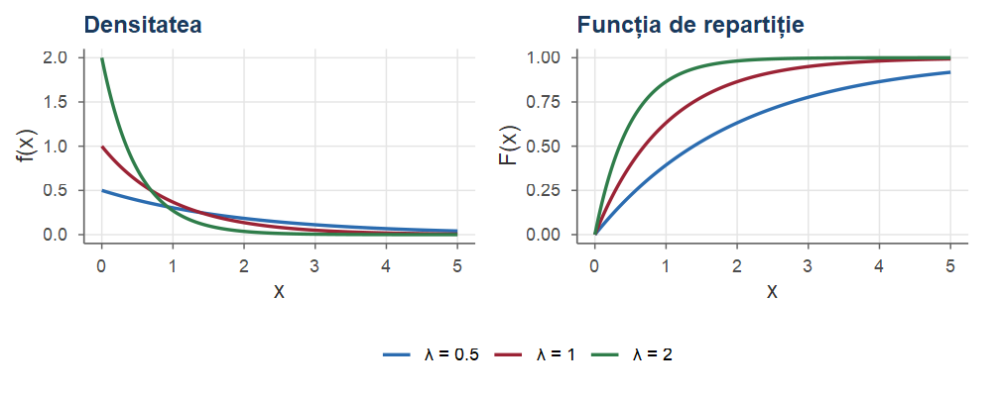
Cu cât rata \(\lambda\) este mai mare, cu atât masa de probabilitate este mai concentrată lângă \(0\).
Dacă \(X\sim\Exp(\lambda)\), atunci \[ \E[X]=\frac1\lambda,\qquad \Var(X)=\frac{1}{\lambda^2}. \]
Demonstrație. Integrăm prin părți, folosind \(\lambda e^{-\lambda x}=\big(-e^{-\lambda x}\big)'\) și faptul că \(x^ke^{-\lambda x}\to0\) când \(x\to\infty\): \[ \E[X]=\int_0^\infty x\,\lambda e^{-\lambda x}\dd x=\int_0^\infty x\big(-e^{-\lambda x}\big)'\dd x=\big(-xe^{-\lambda x}\big)\Big|_0^\infty+\int_0^\infty e^{-\lambda x}\dd x=0+\frac1\lambda . \] (continuăm cu \(\E[X^2]\))■
Demonstrație. Analog, \[ \begin{aligned} \E[X^2]&=\int_0^\infty x^2\big(-e^{-\lambda x}\big)'\dd x=\big(-x^2e^{-\lambda x}\big)\Big|_0^\infty+\int_0^\infty 2xe^{-\lambda x}\dd x\\ &=\frac2\lambda\int_0^\infty x\,\lambda e^{-\lambda x}\dd x=\frac{2}{\lambda}\E[X]=\frac{2}{\lambda^2}, \end{aligned} \] deci \(\Var(X)=\frac{2}{\lambda^2}-\frac{1}{\lambda^2}=\frac{1}{\lambda^2}\).■
Dacă \(\lambda\) este numărul mediu de evenimente pe unitatea de timp (rata), atunci \(1/\lambda\) este timpul mediu de așteptare.
Mediana este soluția ecuației \(1-e^{-\lambda x}=1/2\): \[ x_{1/2}=\frac{\ln2}{\lambda}\approx\frac{0.693}{\lambda}<\frac1\lambda=\E[X], \] deoarece densitatea are o coadă lungă spre dreapta.
Dacă \(X\sim\Exp(\lambda)\) și \(c>0\), atunci \(cX\sim\Exp(\lambda/c)\), deoarece \[ \PP(cX>x)=\PP(X>x/c)=e^{-(\lambda/c)x}. \] În particular \(\lambda X\sim\Exp(1)\): toate repartițiile exponențiale se obțin din \(\Exp(1)\) prin schimbarea unității de măsură a timpului.
Pe \((0,\infty)\) funcția \(F(x)=1-e^{-\lambda x}\) este continuă și strict crescătoare, cu valori în \((0,1)\). Rezolvând \(1-e^{-\lambda x}=u\) obținem \(e^{-\lambda x}=1-u\), adică \[ F^{-1}(u)=-\frac{\ln(1-u)}{\lambda},\qquad u\in(0,1). \] Conform Teoremei 5, dacă \(U\sim\Unif(0,1)\), atunci \(-\frac{1}{\lambda}\ln(1-U)\sim\Exp(\lambda)\). Cum și \(1-U\sim\Unif(0,1)\), rezultă și \[ X=-\frac{\ln U}{\lambda}\sim\Exp(\lambda). \]
set.seed(2026)
lambda <- 2
u <- runif(10000)
x <- -log(u) / lambda # observații Exp(2)
c(medie = mean(x), teor = 1/lambda, var = var(x), teor = 1/lambda^2)
#> medie teor var teor
#> 0.5000 0.5000 0.2454 0.2500
c(empiric = mean(x > 1), teoretic = pexp(1, lambda, lower.tail = FALSE))
#> empiric teoretic
#> 0.1355 0.1353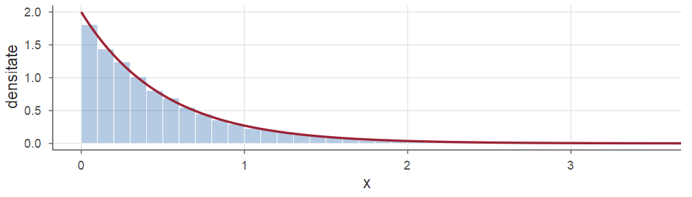
Spunem că o variabilă aleatoare \(X\ge0\), cu \(\PP(X>t)>0\) pentru orice \(t\ge0\), are proprietatea lipsei de memorie dacă \[ \PP(X>s+t\mid X>s)=\PP(X>t),\qquad\text{pentru orice } s,t\ge0 . \]
Interpretare. Dacă \(X\) este durata de viață a unei componente: probabilitatea ca o componentă care a funcționat deja \(s\) ore să mai funcționeze încă cel puțin \(t\) ore este aceeași cu probabilitatea ca o componentă nouă să funcționeze cel puțin \(t\) ore.
Componenta „nu îmbătrânește”. Echivalent: repartiția duratei de viață reziduale \(X-s\), condiționat de \(\{X>s\}\), este aceeași cu repartiția lui \(X\).
Dacă \(X\sim\Exp(\lambda)\), atunci \(X\) are proprietatea lipsei de memorie.
Reciproc, dacă \(X\ge0\) este o variabilă aleatoare continuă cu proprietatea lipsei de memorie, atunci există \(\lambda>0\) astfel încât \(X\sim\Exp(\lambda)\).
Demonstrație.
■
Demonstrație.
Luând \(t=1/n\): \(G(1)=G(1/n)^n\), deci \(G(1/n)=G(1)^{1/n}\) și apoi \[ G(m/n)=G(1/n)^m=G(1)^{m/n},\qquad m,n\in\N,\ n\ge1 . \]■
Demonstrație. Notăm \(\lambda=-\ln G(1)\). Avem \(0<G(1)<1\): \(G(1)>0\) prin ipoteză, iar dacă \(G(1)=1\) ar rezulta \(G(m)=1\) pentru orice \(m\), în contradicție cu \(G(m)\to0\). Deci \(\lambda\in(0,\infty)\) și \[ G(q)=e^{-\lambda q}\qquad\text{pentru orice } q\ge0 \text{ rațional.} \] Pentru \(t\ge0\) oarecare, alegem un șir de raționali \(q_k\to t\); din continuitatea lui \(G\), \[ G(t)=\lim_k e^{-\lambda q_k}=e^{-\lambda t}. \] Așadar \(\PP(X>t)=e^{-\lambda t}\), adică \(X\sim\Exp(\lambda)\).■
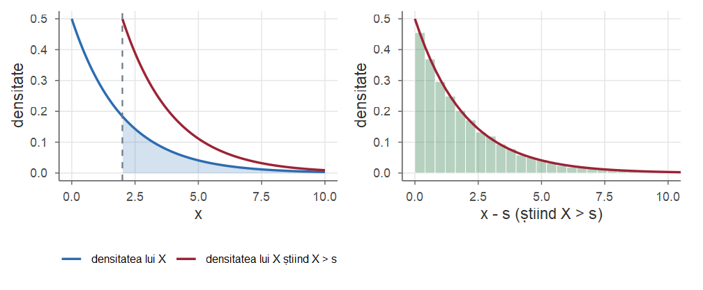
\(X\sim\Exp(0.5)\), \(s=2\). Densitatea condiționată a lui \(X\) știind \(X>s\) este densitatea lui \(X\) translatată cu \(s\); histograma lui \(X-s\) (când \(X>s\)) coincide cu \(\Exp(0.5)\).
Durata de funcționare (în ore) a unui bec este repartizată exponențial, cu media de \(1000\) de ore, deci \(\lambda=1/1000\).
Probabilitatea ca becul să funcționeze mai mult de \(1500\) de ore este \(\PP(X>1500)=e^{-1.5}\approx0.2231\).
Știind că becul a funcționat deja \(1000\) de ore, probabilitatea ca el să mai funcționeze cel puțin încă \(500\) de ore este, conform lipsei de memorie, \(\PP(X>1500\mid X>1000)=\PP(X>500)=e^{-0.5}\approx0.6065\).
Jumătate dintre becuri se ard înainte de mediana \(x_{1/2}=1000\ln2\approx693.1\) ore, deși durata medie este de \(1000\) de ore.
Proprietatea lipsei de memorie este o idealizare. Ea este rezonabilă pentru componente care se defectează din cauze „accidentale” (șocuri externe), dar nu pentru sisteme care se uzează: un motor vechi are, de regulă, o probabilitate mai mare de a se defecta în ora următoare decât unul nou.
Comparați cu Exercițiul 8 din Cursul 4, unde așteptarea anterioară mărește șansa unei sosiri iminente.
Printre repartițiile discrete pe \(\{1,2,\dots\}\), lipsa de memorie caracterizează repartiția geometrică; repartiția exponențială este analogul ei continuu (vezi Exercițiul 4).
Evenimente (apeluri, sosiri de clienți, dezintegrări) se produc aleator în timp, astfel încât numărul \(N(t)\) de evenimente din \([0,t]\) are repartiția \(\Pois(\lambda t)\); \(\lambda>0\) = numărul mediu de evenimente pe unitatea de timp.
Modelul (proces Poisson) presupune în plus că numerele de evenimente din intervale disjuncte sunt independente.
Fie \(T\) momentul producerii primului eveniment. Atunci \(T>t\) dacă și numai dacă în \([0,t]\) nu s-a produs niciun eveniment: \[ \PP(T>t)=\PP\big(N(t)=0\big)=e^{-\lambda t}\frac{(\lambda t)^0}{0!}=e^{-\lambda t},\qquad t\ge0 . \]
Prin urmare \(T\sim\Exp(\lambda)\):
Într-un proces Poisson de rată \(\lambda\), timpul de așteptare până la primul eveniment este exponențial de parametru \(\lambda\).
Se poate arăta că și timpii dintre evenimente consecutive sunt independenți și \(\Exp(\lambda)\); lipsa de memorie reflectă faptul că procesul „o ia de la capăt” în orice moment.
Timpul până la al \(n\)-lea eveniment va fi o sumă de \(n\) exponențiale independente — repartiția \(\GammaD(n,\lambda)\) (Partea III și Cursul 6).
La un centru telefonic sosesc în medie \(3\) apeluri pe oră, conform unui proces Poisson. Probabilitatea ca în următoarea jumătate de oră să nu sosească niciun apel este \(\PP(T>0.5)=e^{-3\cdot0.5}=e^{-1.5}\approx0.2231\), iar timpul mediu de așteptare până la primul apel este \(1/3\) oră, adică \(20\) de minute.
De unde provine repartiția exponențială? Un calculator „vede” timpul în tacte.
Ce devine \(T_n\) când tactele sunt din ce în ce mai scurte?
Fie \(\lambda>0\) și, pentru \(n>\lambda\), fie \(K_n\sim\Geom(\lambda/n)\) și \(T_n=K_n/n\). Atunci, pentru orice \(t\ge0\), \[ \lim_{n\to\infty}\PP(T_n>t)=e^{-\lambda t}=\PP(T>t),\qquad\text{unde } T\sim\Exp(\lambda). \]
Demonstrație. \(\{T_n>t\}=\{K_n>\lfloor nt\rfloor\}\): primele \(\lfloor nt\rfloor\) tacte nu aduc niciun eveniment, deci \[ \PP(T_n>t)=\Big(1-\frac\lambda n\Big)^{\lfloor nt\rfloor}=\Big[\Big(1-\frac\lambda n\Big)^{n}\Big]^{\lfloor nt\rfloor/n}\xrightarrow[n\to\infty]{}e^{-\lambda t}, \] deoarece \(\big(1-\frac\lambda n\big)^n\to e^{-\lambda}\) și \(\lfloor nt\rfloor/n\to t\).■
set.seed(2026)
lambda <- 3; n <- 1000; ore <- 4000 # 1000 de tacte pe oră, 4000 de ore
tact <- which(rbinom(ore * n, 1, lambda / n) == 1) # tactele cu apel
astept <- diff(c(0, tact)) / n # timpii dintre apeluri, în ore
c(medie = mean(astept), P = mean(astept > 0.5)) # Exp(3): 1/3, exp(-1.5)
#> medie P
#> 0.3352 0.2206
nr <- tabulate(ceiling(tact / n), nbins = ore) # apeluri în fiecare oră
c(medie = mean(nr), varianta = var(nr)) # Pois(3): 3 și 3
#> medie varianta
#> 2.982 2.948Același șir de probe Bernoulli produce ambele repartiții: timpii dintre apeluri sunt \(\approx\Exp(3)\) (media \(1/3\), \(e^{-1.5}\approx0.2231\)), iar numărul de apeluri pe oră este \(\approx\Pois(3)\).
Curba „în formă de clopot” apare pentru prima dată la Abraham de Moivre (1733), ca limită a probabilităților binomiale. Gauss a folosit-o în 1809 în teoria erorilor de observație astronomică, iar Laplace a demonstrat primele versiuni generale ale teoremei limită centrale. Denumirea de repartiție „normală” s-a impus spre sfârșitul secolului al XIX-lea.
Spunem că o variabilă aleatoare \(X\) este repartizată normal (gaussian) de parametri \(\mu\in\R\) și \(\sigma^2>0\), și notăm \(X\sim\Norm(\mu,\sigma^2)\), dacă admite densitatea \[ f(x)=\frac{1}{\sqrt{2\pi}\,\sigma}\,e^{-\frac{(x-\mu)^2}{2\sigma^2}},\qquad x\in\R . \] Pentru \(\mu=0\), \(\sigma^2=1\), \(X\) este normală standard, \(X\sim\Norm(0,1)\). Densitatea normalei standard se notează \(\varphi\), iar funcția ei de repartiție \(\Phi\): \[ \varphi(x)=\frac{1}{\sqrt{2\pi}}e^{-x^2/2},\qquad \Phi(x)=\int_{-\infty}^x\frac{1}{\sqrt{2\pi}}e^{-t^2/2}\dd t,\qquad x\in\R . \]
pnorm) sau se citesc din tabele.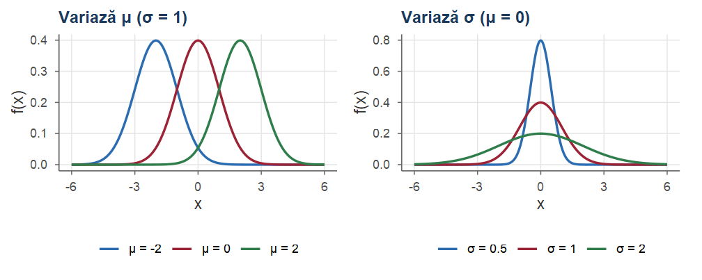
\(\mu\) este parametru de locație (translatează graficul); \(\sigma\) este parametru de scală (aplatizează sau ascute graficul).
Faptul că \(\varphi\) este o densitate nu este evident: trebuie arătat că \(\int_{-\infty}^{\infty}e^{-x^2/2}\dd x=\sqrt{2\pi}\). Folosim coordonate polare, deci formula schimbării de variabilă:
Fie \(G\subseteq\R^n\) o mulțime deschisă și \(g=(g_1,\dots,g_n):G\to\R^n\) o funcție injectivă, cu derivate parțiale continue, al cărei determinant jacobian \(\det J_g(x)=\det\big(\frac{\partial g_i}{\partial x_j}(x)\big)_{1\le i,j\le n}\) este nenul pe \(G\). Atunci, pentru orice funcție \(f\) nenegativă sau integrabilă pe \(g(G)\), \[ \int_{g(G)}f(y)\dd y=\int_G f\big(g(x)\big)\,\big|\det J_g(x)\big|\dd x . \]
Funcția \(\varphi\) este o densitate de probabilitate: \(\varphi(x)>0\) pentru orice \(x\in\R\) și \[ \int_{-\infty}^{+\infty}e^{-x^2/2}\dd x=\sqrt{2\pi},\qquad\text{deci}\qquad\int_{-\infty}^{+\infty}\varphi(x)\dd x=1 . \]
Demonstrație. Fie \(I=\int_{-\infty}^{+\infty}e^{-x^2/2}\dd x\) (convergentă, deoarece \(e^{-x^2/2}\le e^{1/2-|x|}\)). Scriem \(I^2\) ca produs a două integrale și aplicăm teorema lui Fubini: \[ I^2=\Big(\int_{-\infty}^{+\infty}e^{-x^2/2}\dd x\Big)\Big(\int_{-\infty}^{+\infty}e^{-y^2/2}\dd y\Big)=\iint_{\R^2}e^{-\frac{x^2+y^2}{2}}\dd x\dd y . \]■
Demonstrație. Trecem la coordonate polare, \(g(r,\theta)=(r\cos\theta,r\sin\theta)\) pe \(G=(0,\infty)\times(0,2\pi)\); \(g\) este injectivă și \(g(G)\) diferă de \(\R^2\) doar printr-o semidreaptă, de arie zero. Matricea jacobiană și determinantul ei sunt \[ J_g(r,\theta)=\begin{pmatrix}\frac{\partial g_1}{\partial r} & \frac{\partial g_1}{\partial\theta}\\[1mm] \frac{\partial g_2}{\partial r} & \frac{\partial g_2}{\partial\theta}\end{pmatrix}=\begin{pmatrix}\cos\theta & -r\sin\theta\\ \sin\theta & r\cos\theta\end{pmatrix},\qquad \det J_g(r,\theta)=r . \] (continuăm pe slide-ul următor)■
Demonstrație. Intuitiv, dreptunghiul infinitezimal \(\dd x\dd y\) corespunde „sectorului” de arie \(r\dd r\dd\theta\). Cum \(x^2+y^2=r^2\), Teorema 13 dă \[ I^2=\int_0^{2\pi}\!\!\int_0^\infty e^{-r^2/2}\,r\dd r\dd\theta=2\pi\int_0^\infty re^{-r^2/2}\dd r=2\pi\Big(-e^{-r^2/2}\Big)\Big|_0^\infty=2\pi . \] Cum \(I>0\), rezultă \(I=\sqrt{2\pi}\) și \(\int_{\R}\varphi=\frac{1}{\sqrt{2\pi}}\,I=1\).■
Pentru orice \(z\in\R\), \(\Phi(-z)=1-\Phi(z)\). În consecință, dacă \(Z\sim\Norm(0,1)\), atunci și \(-Z\sim\Norm(0,1)\), iar pentru \(z>0\), \(\PP(|Z|\le z)=2\Phi(z)-1\).
Demonstrație. Cu schimbarea de variabilă \(u=-t\) și folosind paritatea lui \(\varphi\), \[ \Phi(-z)=\int_{-\infty}^{-z}\varphi(t)\dd t=\int_z^{\infty}\varphi(-u)\dd u=\int_z^\infty\varphi(u)\dd u=1-\Phi(z). \] Apoi \(\PP(-Z\le z)=\PP(Z\ge-z)=1-\Phi(-z)=\Phi(z)\), deci \(-Z\) are funcția de repartiție \(\Phi\). În fine, \(\PP(|Z|\le z)=\Phi(z)-\Phi(-z)=2\Phi(z)-1\).■
Datorită simetriei, tabelele lui \(\Phi\) conțin de obicei doar valorile pentru \(z\ge0\). Câteva valori care trebuie reținute:
| \(z\) | \(0\) | \(1\) | \(1.645\) | \(1.96\) | \(2\) | \(2.576\) |
|---|---|---|---|---|---|---|
| \(\Phi(z)\) | \(0.5\) | \(0.8413\) | \(0.95\) | \(0.975\) | \(0.9772\) | \(0.995\) |
Dacă \(Z\sim\Norm(0,1)\), atunci \(\E[Z]=0\) și \(\Var(Z)=1\). Mai general, \(\E[Z^{n+1}]=n\,\E[Z^{n-1}]\) pentru \(n\ge1\), de unde \[ \E[Z^{2k+1}]=0,\qquad \E[Z^{2k}]=(2k-1)(2k-3)\cdots3\cdot1,\qquad k\ge1 . \] În particular, \(\E[Z^3]=0\) și \(\E[Z^4]=3\).
Demonstrație. Toate momentele există, deoarece \(|z|^ne^{-z^2/2}\) este integrabilă pe \(\R\). Funcția \(z\mapsto z\varphi(z)\) este impară, deci \(\E[Z]=\int_{\R} z\varphi(z)\dd z=0\); la fel pentru toate momentele de ordin impar. (continuăm cu recurența)■
Demonstrație. Pentru recurență folosim \(\varphi'(z)=-z\varphi(z)\) și integrăm prin părți: \[ \begin{aligned} \E[Z^{n+1}]&=\int_{-\infty}^{\infty}z^n\cdot z\varphi(z)\dd z=\int_{-\infty}^{\infty}z^n\big(-\varphi(z)\big)'\dd z\\ &=\big(-z^n\varphi(z)\big)\Big|_{-\infty}^{\infty}+n\int_{-\infty}^{\infty}z^{n-1}\varphi(z)\dd z=n\,\E[Z^{n-1}]. \end{aligned} \] Pentru \(n=1\) obținem \(\E[Z^2]=1\cdot\E[Z^0]=1\), deci \(\Var(Z)=\E[Z^2]-(\E[Z])^2=1\). Pentru \(n=3\), \(\E[Z^4]=3\E[Z^2]=3\), și așa mai departe.■
Fie \(\mu\in\R\) și \(\sigma>0\).
Dacă \(Z\sim\Norm(0,1)\), atunci \(X=\mu+\sigma Z\sim\Norm(\mu,\sigma^2)\), iar \(\E[X]=\mu\) și \(\Var(X)=\sigma^2\).
Reciproc, dacă \(X\sim\Norm(\mu,\sigma^2)\), atunci variabila standardizată \(Z=\dfrac{X-\mu}{\sigma}\sim\Norm(0,1)\).
Funcția de repartiție și densitatea lui \(X\sim\Norm(\mu,\sigma^2)\) sunt \[ F(x)=\Phi\Big(\frac{x-\mu}{\sigma}\Big),\qquad f(x)=\frac1\sigma\,\varphi\Big(\frac{x-\mu}{\sigma}\Big). \]
Demonstrație. Fie \(X=\mu+\sigma Z\). Cum \(\sigma>0\), \[ F_X(x)=\PP(\mu+\sigma Z\le x)=\PP\Big(Z\le\frac{x-\mu}{\sigma}\Big)=\Phi\Big(\frac{x-\mu}{\sigma}\Big). \] Derivând funcția compusă (\((h\circ u)'=h'(u)\,u'\)), \[ f_X(x)=\frac{\dd}{\dd x}\Phi\Big(\frac{x-\mu}{\sigma}\Big)=\varphi\Big(\frac{x-\mu}{\sigma}\Big)\cdot\frac1\sigma=\frac{1}{\sqrt{2\pi}\,\sigma}e^{-\frac{(x-\mu)^2}{2\sigma^2}}, \] adică densitatea \(\Norm(\mu,\sigma^2)\): a) și c). Media și varianța din Propoziția 16: \(\E[X]=\mu+\sigma\E[Z]=\mu\), \(\Var(X)=\sigma^2\Var(Z)=\sigma^2\). (continuăm cu b))■
Demonstrație. Pentru b), dacă \(X\sim\Norm(\mu,\sigma^2)\): \(\PP\big(\frac{X-\mu}{\sigma}\le z\big)=\PP(X\le\mu+\sigma z)=F(\mu+\sigma z)=\Phi(z)\), conform c).■
Orice variabilă normală se obține din normala standard printr-o scalare (cu \(\sigma\)) și o translație (cu \(\mu\)); orice calcul de probabilități pentru \(\Norm(\mu,\sigma^2)\) se reduce la \(\Phi\).
Dacă \(X\sim\Norm(\mu,\sigma^2)\), atunci \[ \PP(a\le X\le b)=\PP\Big(\frac{a-\mu}{\sigma}\le\frac{X-\mu}{\sigma}\le\frac{b-\mu}{\sigma}\Big)=\Phi\Big(\frac{b-\mu}{\sigma}\Big)-\Phi\Big(\frac{a-\mu}{\sigma}\Big). \] Mai întâi translatăm în origine (scădem \(\mu\)), apoi scalăm la varianța \(1\) (împărțim la \(\sigma\)).
Dacă \(X\sim\Norm(\mu,\sigma^2)\) și \(a,b\in\R\), \(a\ne0\), atunci \(aX+b\sim\Norm\big(a\mu+b,\ a^2\sigma^2\big)\).
Demonstrație. Scriem \(X=\mu+\sigma Z\) cu \(Z\sim\Norm(0,1)\). Atunci \[ aX+b=(a\mu+b)+a\sigma Z . \] Dacă \(a>0\), concluzia rezultă din Propoziția 17 a) cu parametrul de scală \(a\sigma\).
Dacă \(a<0\), scriem \(aX+b=(a\mu+b)+|a|\sigma(-Z)\) și folosim faptul că \(-Z\sim\Norm(0,1)\) (Propoziția 15).■
Dacă \(X\sim\Norm(\mu,\sigma^2)\), atunci \[ \begin{aligned} \PP(|X-\mu|\le\sigma)&=2\Phi(1)-1\approx0.6827,\\ \PP(|X-\mu|\le2\sigma)&=2\Phi(2)-1\approx0.9545,\\ \PP(|X-\mu|\le3\sigma)&=2\Phi(3)-1\approx0.9973. \end{aligned} \]
Demonstrație. Cu \(Z=(X-\mu)/\sigma\sim\Norm(0,1)\), \(\PP(|X-\mu|\le k\sigma)=\PP(|Z|\le k)=2\Phi(k)-1\) (Propoziția 15); valorile numerice se obțin din tabel sau cu pnorm.■
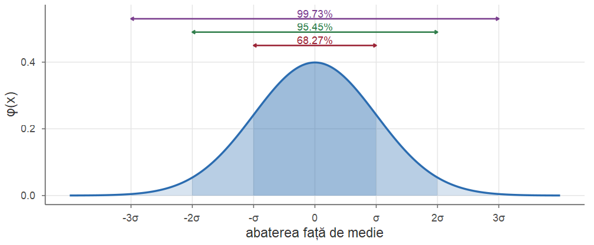
Valori aflate la mai mult de \(3\sigma\) de medie sunt foarte rare; în controlul calității ele semnalează de obicei o anomalie.
Fie \(X\sim\Norm(-1,4)\), deci \(\mu=-1\) și \(\sigma=2\). Calculăm \(\PP(|X|<3)\). Standardizând, \[ \begin{aligned} \PP(|X|<3)&=\PP(-3<X<3)=\PP\Big(\frac{-3-(-1)}{2}<\frac{X-(-1)}{2}<\frac{3-(-1)}{2}\Big)\\ &=\PP\Big(-1<\frac{X+1}{2}<2\Big), \end{aligned} \] iar \(\frac{X+1}{2}\sim\Norm(0,1)\). Deci \[ \PP(|X|<3)=\Phi(2)-\Phi(-1)=\Phi(2)+\Phi(1)-1\approx0.9772+0.8413-1=0.8186 . \]
Același rezultat se poate aproxima folosind doar regula 68–95–99.7. Cu \(Z\sim\Norm(0,1)\), \[ \PP(-1<Z<2)=\PP(-1<Z<1)+\PP(1\le Z<2)\approx0.68+\frac{0.95-0.68}{2}=0.815, \] deoarece, din simetrie, aria dintre \(1\) și \(2\) este jumătate din aria \(\PP(1\le|Z|<2)\approx0.95-0.68\).
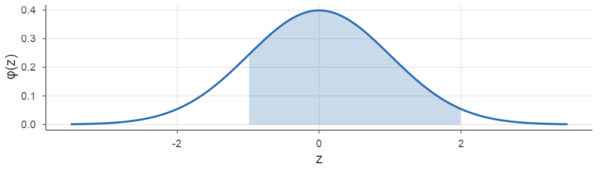
Scorurile IQ sunt construite astfel încât să fie aproximativ \(\Norm(100,15^2)\). Proporția persoanelor cu IQ peste \(130\) este \[ \PP(X>130)=1-\Phi\Big(\frac{130-100}{15}\Big)=1-\Phi(2)\approx0.0228 . \] Pragul depășit de doar \(10\%\) din populație este cuantila de ordin \(0.9\): din \(\Phi(z)=0.9\) obținem \(z_{0.9}\approx1.2816\), deci \[ x_{0.9}=\mu+\sigma z_{0.9}\approx100+15\cdot1.2816\approx119.2 . \] În general, cuantila de ordin \(\alpha\) a repartiției \(\Norm(\mu,\sigma^2)\) este \(x_\alpha=\mu+\sigma z_\alpha\), unde \(z_\alpha=\Phi^{-1}(\alpha)\) este cuantila normalei standard.
pnorm(2) - pnorm(-1) # P(-1 < Z < 2)
#> [1] 0.8186
pnorm(3, mean = -1, sd = 2) -
pnorm(-3, mean = -1, sd = 2) # direct
#> [1] 0.8186
1 - pnorm(130, 100, 15) # P(IQ > 130)
#> [1] 0.02275
qnorm(0.9, 100, 15) # cuantila 0.9
#> [1] 119.2
round(2 * pnorm(1:3) - 1, 4) # regula 68-95-99.7
#> [1] 0.6827 0.9545 0.9973În R, repartiția normală este parametrizată prin abaterea standard \(\sigma\) (argumentul sd), nu prin varianța \(\sigma^2\).
Pentru \(X\sim\Norm(-1,4)\) se scrie pnorm(x, mean = -1, sd = 2), nu sd = 4.
Fie \(U_1,U_2\sim\Unif(0,1)\) independente și \(S_2=U_1+U_2\). Punctul \((U_1,U_2)\) este ales la întâmplare în pătratul \([0,1]^2\), deci \(\PP(S_2\le s)\) este aria regiunii \(\{u_1+u_2\le s\}\): \[ F_{S_2}(s)=\begin{cases}\dfrac{s^2}{2}, & 0\le s\le1,\\[2mm] 1-\dfrac{(2-s)^2}{2}, & 1<s\le2,\end{cases} \qquad f_{S_2}(s)=\begin{cases}s, & 0\le s\le1,\\[1mm] 2-s, & 1<s\le2.\end{cases} \] Două „dreptunghiuri” adunate dau un „triunghi” (densitatea din Exercițiul 5 din Cursul 4).
\(S_n=U_1+\dots+U_n\), cu \(\E[S_n]=\frac n2\), \(\Var(S_n)=\frac n{12}\); suma standardizată este \(Z_n=\dfrac{S_n-n/2}{\sqrt{n/12}}\).
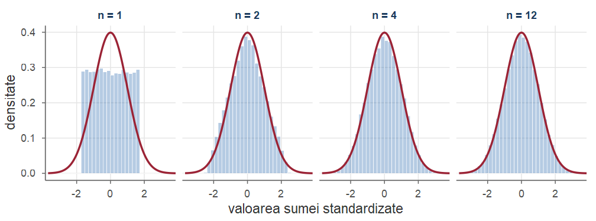
Media și varianța lui \(Z_n\) rămân \(0\) și \(1\); se schimbă forma: histograma se apropie de \(\varphi\) (roșu).
set.seed(2026); B <- 1e5
z_n <- function(n) # suma standardizată a n uniforme
(rowSums(matrix(runif(B * n), nrow = B)) - n / 2) / sqrt(n / 12)
prob <- function(z) c(mean(z <= -1), mean(z <= 1), mean(abs(z) <= 2))
tab <- rbind(t(sapply(c(1, 2, 4, 12), function(n) prob(z_n(n)))),
c(pnorm(-1), pnorm(1), 2 * pnorm(2) - 1))
dimnames(tab) <- list(c("n = 1", "n = 2", "n = 4", "n = 12", "N(0,1)"),
c("P(Z <= -1)", "P(Z <= 1)", "P(|Z| <= 2)"))
round(tab, 4)#> P(Z <= -1) P(Z <= 1) P(|Z| <= 2)
#> n = 1 0.2112 0.7861 1.0000
#> n = 2 0.1752 0.8255 0.9678
#> n = 4 0.1629 0.8338 0.9579
#> n = 12 0.1601 0.8394 0.9548
#> N(0,1) 0.1587 0.8413 0.9545rnorm folosește implicit metoda inversei, care este exactă.Pentru \(\alpha>0\), funcția Gamma (a lui Euler) este \[ \Gamma(\alpha)=\int_0^\infty x^{\alpha-1}e^{-x}\dd x . \]
Funcția Gamma are proprietățile: a) \(\Gamma(1)=1\); b) \(\Gamma(\alpha+1)=\alpha\,\Gamma(\alpha)\) pentru orice \(\alpha>0\); c) \(\Gamma(n)=(n-1)!\) pentru \(n\in\N\), \(n\ge1\); d) \(\Gamma(1/2)=\sqrt\pi\).
Funcția Gamma prelungește factorialul la argumente reale pozitive.
Demonstrație.
\(\Gamma(1)=\int_0^\infty e^{-x}\dd x=1\).
Integrând prin părți, \[ \Gamma(\alpha+1)=\int_0^\infty x^\alpha\big(-e^{-x}\big)'\dd x=\big(-x^\alpha e^{-x}\big)\big|_0^\infty+\alpha\int_0^\infty x^{\alpha-1}e^{-x}\dd x=\alpha\Gamma(\alpha). \]
Rezultă din a) și b) prin inducție.
Cu schimbarea de variabilă \(x=t^2/2\), \(\dd x=t\dd t\), și folosind integrala lui Gauss (Propoziția 14), \[ \Gamma(1/2)=\int_0^\infty x^{-1/2}e^{-x}\dd x=\int_0^\infty\frac{\sqrt2}{t}e^{-t^2/2}\,t\dd t=\sqrt2\int_0^\infty e^{-t^2/2}\dd t=\sqrt2\cdot\frac{\sqrt{2\pi}}{2}=\sqrt\pi . \]
■
Cu schimbarea de variabilă \(x=\lambda t\) obținem formula foarte utilă \[ \int_0^\infty t^{\alpha-1}e^{-\lambda t}\dd t=\frac{\Gamma(\alpha)}{\lambda^\alpha},\qquad \alpha,\lambda>0, \] care arată că funcția de mai jos este o densitate.
Fie \(\alpha>0\) și \(\lambda>0\). O variabilă aleatoare \(X\) are repartiția Gamma de parametri \(\alpha\) (parametru de formă) și \(\lambda\) (rată), și notăm \(X\sim\GammaD(\alpha,\lambda)\), dacă are densitatea \[ f(x)=\frac{\lambda^\alpha}{\Gamma(\alpha)}\,x^{\alpha-1}e^{-\lambda x},\qquad x>0, \] și \(f(x)=0\) pentru \(x\le0\).
Dacă \(X\sim\GammaD(\alpha,\lambda)\), atunci \(\E[X^k]=\dfrac{\Gamma(\alpha+k)}{\Gamma(\alpha)\lambda^k}\) pentru \(k\ge1\); în particular \[ \E[X]=\frac{\alpha}{\lambda},\qquad \Var(X)=\frac{\alpha}{\lambda^2}. \]
Demonstrație. \[ \E[X^k]=\frac{\lambda^\alpha}{\Gamma(\alpha)}\int_0^\infty x^{\alpha+k-1}e^{-\lambda x}\dd x=\frac{\lambda^\alpha}{\Gamma(\alpha)}\cdot\frac{\Gamma(\alpha+k)}{\lambda^{\alpha+k}}\quad\text{(formula de pe slide-ul anterior).} \] Cu \(\Gamma(\alpha+1)=\alpha\Gamma(\alpha)\) și \(\Gamma(\alpha+2)=(\alpha+1)\alpha\Gamma(\alpha)\): \(\E[X]=\alpha/\lambda\), \(\E[X^2]=\alpha(\alpha+1)/\lambda^2\) și \(\Var(X)=\alpha/\lambda^2\).■
Fie \(a,b>0\). O variabilă aleatoare \(X\) are repartiția Beta de parametri \(a\) și \(b\), și notăm \(X\sim\BetaD(a,b)\), dacă are densitatea \[ f(x)=\frac{1}{B(a,b)}\,x^{a-1}(1-x)^{b-1},\qquad 0<x<1, \] și \(f(x)=0\) în rest, unde \(B(a,b)=\int_0^1x^{a-1}(1-x)^{b-1}\dd x\) este funcția Beta.
Se poate demonstra (cu o schimbare de variabilă într-o integrală dublă) că \[ B(a,b)=\frac{\Gamma(a)\Gamma(b)}{\Gamma(a+b)} . \]
Dacă \(X\sim\BetaD(a,b)\), atunci \[ \E[X]=\frac{a}{a+b},\qquad \Var(X)=\frac{ab}{(a+b)^2(a+b+1)}. \]
Demonstrație. Avem \[ \E[X]=\frac{1}{B(a,b)}\int_0^1x^{a}(1-x)^{b-1}\dd x=\frac{B(a+1,b)}{B(a,b)}=\frac{\Gamma(a+1)\Gamma(b)}{\Gamma(a+b+1)}\cdot\frac{\Gamma(a+b)}{\Gamma(a)\Gamma(b)}=\frac{a}{a+b}. \] Analog, \[ \E[X^2]=\frac{B(a+2,b)}{B(a,b)}=\frac{a(a+1)}{(a+b)(a+b+1)}, \] iar varianța se obține prin \(\E[X^2]-(\E[X])^2=\dfrac{a(a+1)(a+b)-a^2(a+b+1)}{(a+b)^2(a+b+1)}=\dfrac{ab}{(a+b)^2(a+b+1)}\).■
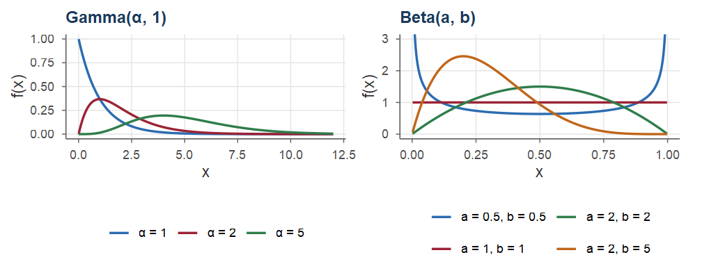
Stânga: \(\GammaD(\alpha,1)\) (\(\alpha=1\): \(\Exp(1)\)). Dreapta: \(\BetaD(a,b)\); \(\BetaD(1,1)\) este uniformă.
Cunoaștem repartiția lui \(X\) și ne interesează repartiția lui \(Y=g(X)\):
Pentru medie ajunge Teorema 10 din Cursul 4: \(\E[g(X)]=\int g(x)f_X(x)\dd x\). Pentru probabilități, cuantile sau densitate avem nevoie de repartiția lui \(Y\).
În cazul discret: \(\PP(Y=y)=\sum_{x:\,g(x)=y}\PP(X=x)\). În cazul continuu nu putem proceda punct cu punct (probabilitățile punctuale sunt nule), dar putem lucra cu funcția de repartiție.
Pentru a determina densitatea lui \(Y=g(X)\), unde \(X\) are densitatea \(f_X\):
Dacă \(g\) este strict crescătoare, pasul 1 este imediat: \[ \PP(g(X)\le y)=\PP\big(X\le g^{-1}(y)\big)=F_X\big(g^{-1}(y)\big), \] iar densitatea se obține derivând funcția compusă.
Fie \(Z\sim\Norm(0,1)\) și \(Y=|Z|\). Determinăm a) \(\E[Y]\) și \(\Var(Y)\); b) funcția de repartiție și densitatea lui \(Y\).
Aplicație: dacă \(X\sim\Norm(\mu,\sigma^2)\), abaterea medie absolută este \[ \E|X-\mu|=\sigma\E|Z|=\sigma\sqrt{2/\pi}\approx0.798\,\sigma, \] cu aproximativ \(20\%\) mai mică decât abaterea standard.
Fie \(U\sim\Unif(0,1)\) și \(Y=U^2\in[0,1]\). Pentru \(y\in[0,1]\), \[ F_Y(y)=\PP(U^2\le y)=\PP(U\le\sqrt y)=\sqrt y, \] deci \(f_Y(y)=\frac{1}{2\sqrt y}\) pentru \(0<y\le1\).
Regăsim densitatea nemărginită din Exemplul 1 din Cursul 4: densitatea explodează în \(0\) deoarece ridicarea la pătrat „comprimă” valorile mici ale lui \(U\) spre \(0\) (de exemplu, \(U\le0.1\) implică \(Y\le0.01\)).
Fie \(X\) o variabilă aleatoare continuă cu densitatea \(f_X\), nulă în afara unui interval deschis \(I\), și fie \(g:I\to\R\) o funcție strict monotonă și derivabilă, cu \(g'(x)\ne0\) pe \(I\). Atunci \(Y=g(X)\) este o variabilă continuă, cu densitatea \[ f_Y(y)=f_X\big(g^{-1}(y)\big)\,\Big|\frac{\dd}{\dd y}g^{-1}(y)\Big|,\qquad y\in g(I), \] și \(f_Y(y)=0\) pentru \(y\notin g(I)\).
Demonstrație. Notăm \(h=g^{-1}:g(I)\to I\); \(h\) este strict monotonă și derivabilă, cu \(h'(y)=1/g'(h(y))\).
Cazul \(g\) strict crescătoare. Atunci \(h\) este crescătoare și, pentru \(y\in g(I)\), \[ F_Y(y)=\PP(g(X)\le y)=\PP(X\le h(y))=F_X(h(y)). \] Derivând funcția compusă, \(f_Y(y)=f_X(h(y))\,h'(y)\), iar \(h'(y)>0\), deci \(h'(y)=|h'(y)|\).
Cazul \(g\) strict descrescătoare. Aplicarea lui \(h\) (descrescătoare) inversează inegalitatea: \[ F_Y(y)=\PP(g(X)\le y)=\PP(X\ge h(y))=1-F_X(h(y)), \] căci \(\PP(X=h(y))=0\). Derivând, \(f_Y(y)=-f_X(h(y))\,h'(y)=f_X(h(y))\,|h'(y)|\), deoarece acum \(h'(y)<0\).■
Factorul \(\big|\frac{\dd}{\dd y}g^{-1}(y)\big|=1/|g'(x)|\) (cu \(x=g^{-1}(y)\)): probabilitatea \(f_X(x)\dd x\) a unui interval mic din jurul lui \(x\) se regăsește în intervalul din jurul lui \(y=g(x)\), de lungime \(|g'(x)|\dd x\); densitatea (probabilitate pe unitatea de lungime) se împarte deci la \(|g'(x)|\).
Formula din Teorema 26 este cazul unidimensional al Teoremei 13; varianta multidimensională va fi folosită pentru vectori aleatori (Cursul 6).
Dacă \(X\) are densitatea \(f_X\) și \(a\ne0\), \(b\in\R\), atunci \(Y=aX+b\) are densitatea \[ f_Y(y)=\frac{1}{|a|}\,f_X\Big(\frac{y-b}{a}\Big),\qquad y\in\R . \]
Pentru \(X\sim\Norm(\mu,\sigma^2)\) redă Corolarul 18; pentru \(X\sim\Exp(\lambda)\), \(a=c>0\), \(b=0\) redă \(cX\sim\Exp(\lambda/c)\).
Fie \(X\sim\Norm(\mu,\sigma^2)\) și \(Y=e^X\). Funcția \(g(x)=e^x\) este strict crescătoare de la \(\R\) la \((0,\infty)\), cu \(g^{-1}(y)=\ln y\) și \(\frac{\dd}{\dd y}\ln y=\frac1y\). Din Teorema 26, \[ f_Y(y)=\frac{1}{\sqrt{2\pi}\,\sigma}\,e^{-\frac{(\ln y-\mu)^2}{2\sigma^2}}\cdot\frac1y=\frac{1}{y\,\sigma\sqrt{2\pi}}\,e^{-\frac{(\ln y-\mu)^2}{2\sigma^2}},\qquad y>0 . \] Spunem că \(Y\) are repartiție log-normală de parametri \(\mu\) și \(\sigma^2\) (\(\ln Y\) este normală). Modelează mărimi pozitive rezultate din efecte multiplicative: prețuri ale acțiunilor, venituri, dimensiuni ale particulelor.
Media se calculează cu Teorema 10 din Cursul 4, fără \(f_Y\). Pentru \(Z\sim\Norm(0,1)\) și \(t\in\R\), completând pătratul, \(tz-\frac{z^2}{2}=\frac{t^2}{2}-\frac{(z-t)^2}{2}\), deci \[ \E[e^{tZ}]=\int_{-\infty}^{\infty}e^{tz}\frac{e^{-z^2/2}}{\sqrt{2\pi}}\dd z=e^{t^2/2}\int_{-\infty}^{\infty}\frac{e^{-(z-t)^2/2}}{\sqrt{2\pi}}\dd z=e^{t^2/2}, \] ultima integrală fiind integrala densității \(\Norm(t,1)\). Cu \(X=\mu+\sigma Z\), \[ \E[Y]=e^\mu\E[e^{\sigma Z}]=e^{\mu+\sigma^2/2},\qquad \E[Y^2]=\E[e^{2X}]=e^{2\mu+2\sigma^2}. \]
Din cele de mai sus, \[ \E[Y]=e^{\mu+\sigma^2/2},\qquad \Var(Y)=\E[Y^2]-(\E Y)^2=\big(e^{\sigma^2}-1\big)e^{2\mu+\sigma^2}. \]
Dacă \(g\) nu este monotonă, formula din Teorema 26 nu se aplică direct, dar metoda funcției de repartiție funcționează în continuare.
Fie \(Z\sim\Norm(0,1)\) și \(Y=Z^2\). Funcția \(g(z)=z^2\) nu este monotonă pe \(\R\). Pentru \(y\le0\), \(F_Y(y)=0\). Pentru \(y>0\), \[ F_Y(y)=\PP(Z^2\le y)=\PP(-\sqrt y\le Z\le\sqrt y)=\Phi(\sqrt y)-\Phi(-\sqrt y)=2\Phi(\sqrt y)-1 . \] Derivând, \[ f_Y(y)=2\varphi(\sqrt y)\cdot\frac{1}{2\sqrt y}=\frac{1}{\sqrt{2\pi}}\,y^{-1/2}e^{-y/2},\qquad y>0 . \]
Comparând cu Definiția 22 și folosind \(\Gamma(1/2)=\sqrt\pi\), recunoaștem densitatea \(\GammaD(1/2,1/2)\): \[ \frac{(1/2)^{1/2}}{\Gamma(1/2)}=\frac{1}{\sqrt{2}\sqrt{\pi}}=\frac{1}{\sqrt{2\pi}} . \] Așadar \(Z^2\sim\chisq{1}\) (repartiția hi-pătrat cu un grad de libertate), cu \[ \E[Y]=\E[Z^2]=1,\qquad \Var(Y)=\E[Z^4]-1=3-1=2 . \] Această repartiție stă la baza testelor \(\chi^2\) din partea a doua a cursului (Cursul 8).
Mai general, dacă ecuația \(g(x)=y\) are un număr finit de soluții \(x_1(y),\dots,x_m(y)\) și \(g'(x_i)\ne0\), atunci \[ f_Y(y)=\sum_{i=1}^m\frac{f_X\big(x_i(y)\big)}{\big|g'\big(x_i(y)\big)\big|}, \] deoarece fiecare soluție contribuie cu masa de probabilitate din vecinătatea ei.
Pentru \(g(z)=z^2\), soluțiile sunt \(\pm\sqrt y\), \(|g'(\pm\sqrt y)|=2\sqrt y\) și regăsim \[ f_Y(y)=\frac{\varphi(\sqrt y)+\varphi(-\sqrt y)}{2\sqrt y}=\frac{\varphi(\sqrt y)}{\sqrt y}. \]
Este util să verificăm prin simulare densitatea obținută: generăm multe valori ale lui \(X\), le aplicăm \(g\) și comparăm histograma cu densitatea calculată.
set.seed(2026)
z <- rnorm(1e5)
y <- z^2 # Y = Z^2 ~ hi-pătrat(1)
c(medie = mean(y), varianta = var(y)) # teoretic: 1 și 2
#> medie varianta
#> 1.007 2.031
c(empiric = mean(y <= 1), teor = 2 * pnorm(1) - 1, pchisq = pchisq(1, 1))
#> empiric teor pchisq
#> 0.6811 0.6827 0.6827
w <- exp(z) # W = e^Z log-normală
c(medie = mean(w), teor = exp(1/2), mediana = median(w), teor = 1)
#> medie teor mediana teor
#> 1.658 1.649 1.004 1.000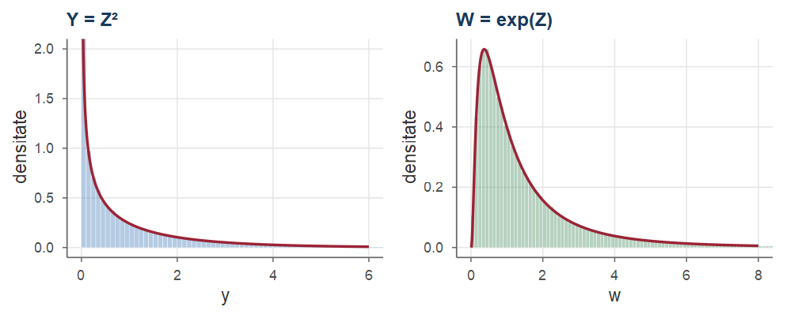
Stânga: \(Y=Z^2\) și densitatea \(\chisq{1}\) (nemărginită în \(0\)). Dreapta: \(W=e^Z\) și densitatea log-normală.
Formula din Teorema 26 se aplică doar funcțiilor strict monotone pe suportul lui \(X\).
O greșeală frecventă este aplicarea ei pentru \(Y=Z^2\) cu \(g^{-1}(y)=\sqrt y\), ceea ce ar da \[ f_Y(y)=\frac{\varphi(\sqrt y)}{2\sqrt y}, \] o funcție a cărei integrală este \(1/2\), nu \(1\): s-a pierdut contribuția ramurii \(z<0\).
În caz de dubiu, folosiți metoda funcției de repartiție și verificați că densitatea obținută are integrala \(1\).
\(\Norm(1,1)\) și \(\Exp(1)\) au aceeași medie și aceeași varianță, dar forme foarte diferite.
Fie \(X\) cu \(\E[X^4]<\infty\), media \(\mu\), abaterea standard \(\sigma>0\) și \(Z=(X-\mu)/\sigma\). Numerele \[ \gamma_X=\E[Z^3]=\frac{\E\big[(X-\mu)^3\big]}{\sigma^3},\qquad \kappa_X=\E[Z^4]=\frac{\E\big[(X-\mu)^4\big]}{\sigma^4} \] se numesc coeficientul de asimetrie (skewness), respectiv coeficientul de aplatizare (kurtosis) al lui \(X\); \(\kappa_X-3\) se numește exces.
Pentru repartițiile normală, uniformă și exponențială, coeficienții nu depind de parametri: \[ \begin{array}{l|ccc} & \Norm(\mu,\sigma^2) & \Unif(a,b) & \Exp(\lambda)\\ \hline \text{asimetria }\gamma & 0 & 0 & 2\\ \text{aplatizarea }\kappa & 3 & 9/5 & 9 \end{array} \]
Alarmă dacă timpul de răspuns \(X\) depășește \(\mu+3\sigma\).
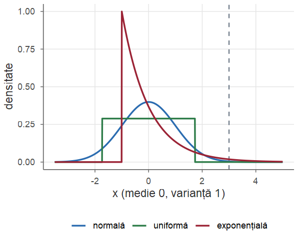
forma <- function(x) { # coeficienții empirici (eșantion)
z <- (x - mean(x)) / sd(x) # standardizare
c(asimetrie = mean(z^3), aplatizare = mean(z^4))
}
set.seed(2026); n <- 1e5
round(rbind(uniforma = forma(runif(n)),
normala = forma(rnorm(n, 10, 2)),
exponentiala = forma(rexp(n, 0.5)),
gamma10 = forma(rgamma(n, shape = 10, rate = 1))), 2)#> asimetrie aplatizare
#> uniforma 0.00 1.80
#> normala -0.01 3.01
#> exponentiala 2.01 9.20
#> gamma10 0.63 3.61Verificare rapidă a normalității unui set de date: forma(x) departe de \((0,3)\) înseamnă că histograma nu are formă de clopot.
| Repartiție | Densitatea și suportul | Media | Varianța | R |
|---|---|---|---|---|
| \(\Unif(a,b)\) | \(\dfrac{1}{b-a}\), \(a<x<b\) | \(\dfrac{a+b}{2}\) | \(\dfrac{(b-a)^2}{12}\) | unif(a, b) |
| \(\Exp(\lambda)\) | \(\lambda e^{-\lambda x}\), \(x>0\) | \(\dfrac1\lambda\) | \(\dfrac1{\lambda^2}\) | exp(rate) |
| \(\Norm(\mu,\sigma^2)\) | \(\dfrac{1}{\sigma\sqrt{2\pi}}e^{-(x-\mu)^2/(2\sigma^2)}\), \(x\in\R\) | \(\mu\) | \(\sigma^2\) | norm(mean, sd) |
| \(\GammaD(\alpha,\lambda)\) | \(\dfrac{\lambda^\alpha}{\Gamma(\alpha)}x^{\alpha-1}e^{-\lambda x}\), \(x>0\) | \(\dfrac\alpha\lambda\) | \(\dfrac{\alpha}{\lambda^2}\) | gamma(shape, rate) |
| \(\BetaD(a,b)\) | \(\dfrac{x^{a-1}(1-x)^{b-1}}{B(a,b)}\), \(0<x<1\) | \(\dfrac{a}{a+b}\) | \(\dfrac{ab}{(a+b)^2(a+b+1)}\) | beta(a, b) |
| Repartiție | Densitatea și suportul | Media | Varianța | R |
|---|---|---|---|---|
| \(\chisq{n}\) | \(\dfrac{x^{n/2-1}e^{-x/2}}{2^{n/2}\Gamma(n/2)}\), \(x>0\) | \(n\) | \(2n\) | chisq(df) |
| log-normală | \(\dfrac{1}{x\sigma\sqrt{2\pi}}e^{-(\ln x-\mu)^2/(2\sigma^2)}\), \(x>0\) | \(e^{\mu+\sigma^2/2}\) | \((e^{\sigma^2}-1)e^{2\mu+\sigma^2}\) | lnorm(mu, sigma) |
| logistică | \(\dfrac{e^x}{(1+e^x)^2}\), \(x\in\R\) | \(0\) | \(\dfrac{\pi^2}{3}\) | logis() |
| Cauchy | \(\dfrac{1}{\pi(1+x^2)}\), \(x\in\R\) | nu există | nu există | cauchy() |
Prefixele R: d (densitate), p (funcția de repartiție), q (cuantilă), r (generare).
Fie \(U\sim\Unif(0,5)\). Care este probabilitatea ca ecuația \(4x^2+4Ux+U+2=0\) să aibă ambele rădăcini reale?
Rădăcinile sunt reale dacă și numai dacă discriminantul este nenegativ: \[ 16U^2-16(U+2)\ge0\iff U^2-U-2\ge0\iff(U-2)(U+1)\ge0 . \] Cum \(U\ge0\), avem \(U+1>0\), deci condiția devine \(U\ge2\). Prin urmare \(\PP(U\ge2)=\frac{5-2}{5}=\frac35 .\)
Un băț de lungime \(1\) se rupe într-un punct ales uniform. Fie \(L\) lungimea bucății mai lungi. Determinați repartiția lui \(L\), \(\E[L]\), \(\Var(L)\) și probabilitatea ca bucata mai lungă să fie de cel puțin două ori mai lungă decât cea scurtă.
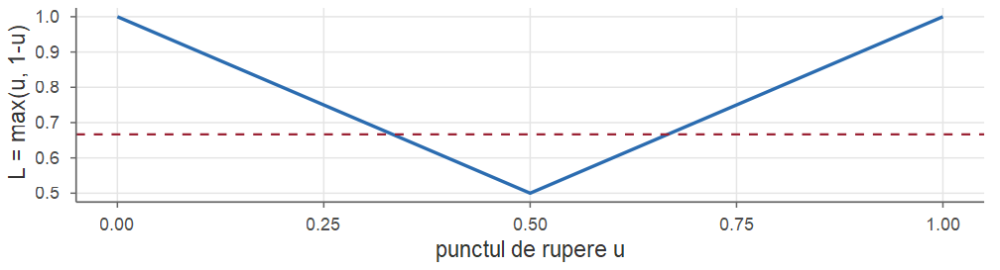
Fie \(U\sim\Unif(0,1)\) punctul de rupere; \(L=\max(U,1-U)\in[1/2,1]\). Pentru \(x\in[1/2,1]\), \[ F_L(x)=\PP(U\le x,\ 1-U\le x)=\PP(1-x\le U\le x)=x-(1-x)=2x-1 . \] Aceasta este funcția de repartiție a lui \(\Unif(1/2,1)\) (Propoziția 2 cu \(a=1/2\), \(b=1\)). Deci \[ \E[L]=\frac34,\qquad \Var(L)=\frac{(1/2)^2}{12}=\frac1{48}. \] Bucata lungă este de cel puțin două ori mai lungă decât cea scurtă dacă \(L\ge2(1-L)\), adică \(L\ge2/3\): \[ \PP(L\ge2/3)=\frac{1-2/3}{1/2}=\frac23 . \]
Durata de funcționare (în ani) a unui server până la prima defecțiune este \(X\sim\Exp(\lambda)\) cu \(\E[X]=5\) ani.
Calculați \(\PP(X>5)\) și \(\PP(3<X<7)\).
Știind că serverul funcționează de \(4\) ani, care este probabilitatea să mai funcționeze cel puțin \(5\) ani?
Determinați mediana și cuantila de ordin \(0.9\).
Din \(\E[X]=1/\lambda=5\) obținem \(\lambda=0.2\).
\(\PP(X>5)=e^{-0.2\cdot5}=e^{-1}\approx0.3679\); \(\PP(3<X<7)=F(7)-F(3)=e^{-0.6}-e^{-1.4}\approx0.5488-0.2466=0.3022\).
Din lipsa de memorie, \(\PP(X>9\mid X>4)=\PP(X>5)=e^{-1}\approx0.3679\): vârsta serverului nu contează.
Din \(1-e^{-0.2x}=\alpha\) rezultă \(x_\alpha=-5\ln(1-\alpha)\). Mediana este \(5\ln2\approx3.466\) ani, iar \(x_{0.9}=5\ln10\approx11.51\) ani.
Fie \(X\sim\Exp(\lambda)\) și \(N=\lfloor X\rfloor\) partea întreagă a lui \(X\). Determinați repartiția lui \(N\) și \(\E[N]\).
Indicație: evenimentul \(\{N=k\}\) se scrie cu ajutorul lui \(X\) ca \(\{k\le X<k+1\}\).
\(N\) ia valori în \(\{0,1,2,\dots\}\) și, pentru \(k\ge0\), \[ \PP(N=k)=\PP(k\le X<k+1)=e^{-\lambda k}-e^{-\lambda(k+1)}=\big(e^{-\lambda}\big)^k\big(1-e^{-\lambda}\big). \] Cu \(p=1-e^{-\lambda}\), \(\PP(N=k)=(1-p)^kp\), deci \(N+1\sim\Geom(p)\) (numărul de încercări până la primul succes). Rezultă \[ \E[N]=\frac1p-1=\frac{e^{-\lambda}}{1-e^{-\lambda}}=\frac{1}{e^{\lambda}-1}. \] Discretizarea unei exponențiale produce o variabilă geometrică: ambele au lipsa de memorie.
Notele la un examen sunt aproximativ \(\Norm(6.5,\,1.5^2)\). a) Ce proporție de studenți obțin peste \(8\)? b) Ce proporție obțin note între \(5\) și \(9\)? c) Care este nota minimă a celor mai buni \(10\%\) dintre studenți?
Standardizăm cu \(\mu=6.5\), \(\sigma=1.5\).
\(\PP(X>8)=1-\Phi\big(\frac{8-6.5}{1.5}\big)=1-\Phi(1)\approx0.1587\).
\(\PP(5<X<9)=\Phi\big(\frac{9-6.5}{1.5}\big)-\Phi\big(\frac{5-6.5}{1.5}\big)=\Phi(1.667)-\Phi(-1)\approx0.9522-0.1587=0.7936\).
Căutăm \(x\) cu \(\PP(X>x)=0.1\), adică cuantila de ordin \(0.9\): \(x=6.5+1.5\,z_{0.9}\approx6.5+1.5\cdot1.2816\approx8.42\).
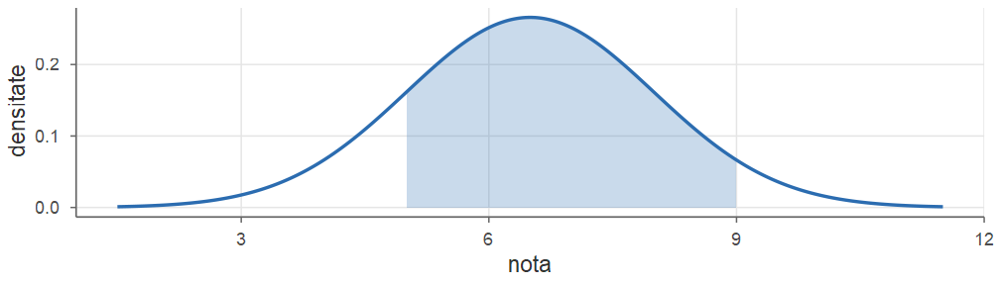
Aria hașurată: \(\PP(5<X<9)\approx0.7936\).
Durata unei intervenții (în minute) este \(X\sim\Norm(\mu,\sigma^2)\). Se știe că \(10\%\) dintre intervenții durează mai puțin de \(60\) de minute și \(5\%\) durează mai mult de \(90\) de minute. Determinați \(\mu\) și \(\sigma\).
Condițiile sunt \(\Phi\big(\frac{60-\mu}{\sigma}\big)=0.1\) și \(\Phi\big(\frac{90-\mu}{\sigma}\big)=0.95\). Cum \(z_{0.1}=-z_{0.9}\approx-1.2816\) și \(z_{0.95}\approx1.6449\), obținem sistemul liniar \[ \begin{cases}60-\mu=-1.2816\,\sigma,\\ 90-\mu=1.6449\,\sigma.\end{cases} \] Scăzând ecuațiile, \(30=2.9265\,\sigma\), deci \(\sigma\approx10.25\) și \(\mu=60+1.2816\,\sigma\approx73.14\) minute.
Verificăm că, pentru valorile găsite, \(\PP(X<60)=0.10\) și \(\PP(X>90)=0.05\).
Diametrul (în mm) al unor bile de rulment este \(\Norm(10,\,0.02^2)\). O bilă este acceptată dacă diametrul ei este în \([9.95,\,10.05]\). a) Ce proporție de bile este acceptată? b) Cât de mică trebuie să fie abaterea standard pentru ca \(99\%\) dintre bile să fie acceptate?
Cu \(Z=(X-10)/0.02\), \[ \PP(|X-10|\le0.05)=\PP(|Z|\le2.5)=2\Phi(2.5)-1\approx0.9876 . \]
Vrem \(2\Phi(0.05/\sigma)-1=0.99\), adică \(\Phi(0.05/\sigma)=0.995\), deci \[ \frac{0.05}{\sigma}=z_{0.995}\approx2.5758\qquad\Longrightarrow\qquad \sigma\approx0.0194\text{ mm}. \]
Fie \(U\sim\Unif(0,1)\) și \(Y=1/U\). Determinați densitatea lui \(Y\) și arătați că \(\E[Y]=\infty\).
\(g(u)=1/u\) este strict descrescătoare pe \((0,1)\), cu \(g((0,1))=(1,\infty)\), \(g^{-1}(y)=1/y\) și \(\big|\frac{\dd}{\dd y}\frac1y\big|=\frac1{y^2}\). Din Teorema 26, \[ f_Y(y)=1\cdot\frac{1}{y^2},\quad y>1,\qquad f_Y(y)=0\ \text{în rest (o repartiție Pareto)}. \] Verificare cu metoda funcției de repartiție: \(F_Y(y)=\PP(U\ge1/y)=1-1/y\) pentru \(y\ge1\).
Media nu este finită: \(\E[Y]=\int_1^\infty y\cdot\frac1{y^2}\dd y=\int_1^\infty\frac{\dd y}{y}=+\infty\) (sau direct, \(\E[1/U]=\int_0^1\frac{\dd u}{u}=\infty\)). Deși \(U\) este mărginită, inversa ei are o coadă foarte grea.
Fie \(X\sim\Exp(1)\) și \(Y=\sqrt X\). Determinați densitatea lui \(Y\), \(\PP(Y>1)\) și \(\E[Y]\).
Indicație: \(g(x)=\sqrt x\) este strict crescătoare pe \((0,\infty)\); pentru medie folosiți Teorema 10 din Cursul 4 și funcția Gamma.
Pe \((0,\infty)\), \(g(x)=\sqrt x\) este strict crescătoare, \(g^{-1}(y)=y^2\), \(\frac{\dd}{\dd y}y^2=2y\). Deci \[ f_Y(y)=e^{-y^2}\cdot2y,\qquad y>0 . \] Apoi \(\PP(Y>1)=\PP(X>1)=e^{-1}\approx0.3679\) (nu avem nevoie de \(f_Y\)), iar din Teorema 10 din Cursul 4 și definiția funcției Gamma, \[ \E[Y]=\E[X^{1/2}]=\int_0^\infty x^{1/2}e^{-x}\dd x=\Gamma(3/2)=\tfrac12\Gamma(1/2)=\frac{\sqrt\pi}{2}\approx0.8862 . \]
Randamentul logaritmic anual al unei investiții este \(X\sim\Norm(0,1)\) (în unități convenabile), iar factorul de creștere este \(Y=e^X\). Calculați \(\PP(Y>2)\), mediana și media lui \(Y\) și verificați prin simulare.
\(\PP(Y>2)=\PP(X>\ln2)=1-\Phi(0.6931)\approx0.2441\). Mediana este \(e^0=1\), iar media \(\E[Y]=e^{1/2}\approx1.6487\) (Exemplul 11). Media este influențată de valorile foarte mari, rare, ale lui \(Y\).
Folosind metoda inversei, scrieți un algoritm de simulare pentru repartiția Cauchy, cu densitatea \(f(x)=\frac{1}{\pi(1+x^2)}\), și comparați cuantilele empirice cu cele teoretice.
Indicație: calculați \(F\) și rezolvați ecuația \(F(x)=u\).
Funcția de repartiție este \[ F(x)=\int_{-\infty}^x\frac{\dd t}{\pi(1+t^2)}=\frac12+\frac1\pi\arctan x, \] continuă și strict crescătoare. Din \(\frac12+\frac1\pi\arctan x=u\) obținem \(F^{-1}(u)=\tan\big(\pi(u-\tfrac12)\big)\). Deci, dacă \(U\sim\Unif(0,1)\), atunci \(\tan\big(\pi(U-\frac12)\big)\) are repartiție Cauchy.
Echivalent: dacă \(\Theta\sim\Unif(-\pi/2,\pi/2)\), atunci \(\tan\Theta\) este Cauchy (panta unei drepte prin origine cu unghi uniform aleator).
Cuantilele sunt reproduse bine, dar media aritmetică a valorilor simulate nu se stabilizează când \(n\) crește, deoarece \(\E[X]\) nu există (Exemplul 8 din Cursul 4).
Probabilități și Statistică · Cursul 5 — Repartiții continue remarcabile